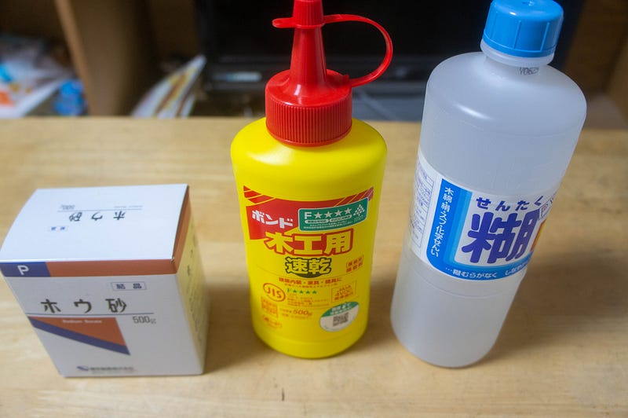
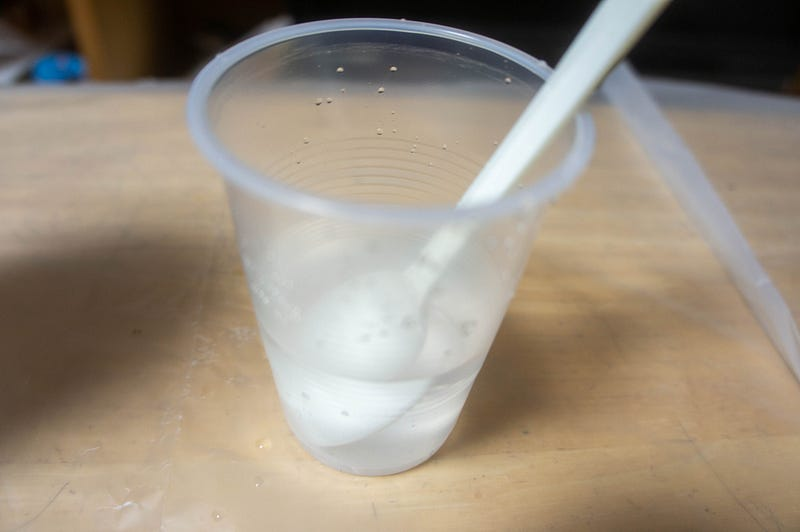
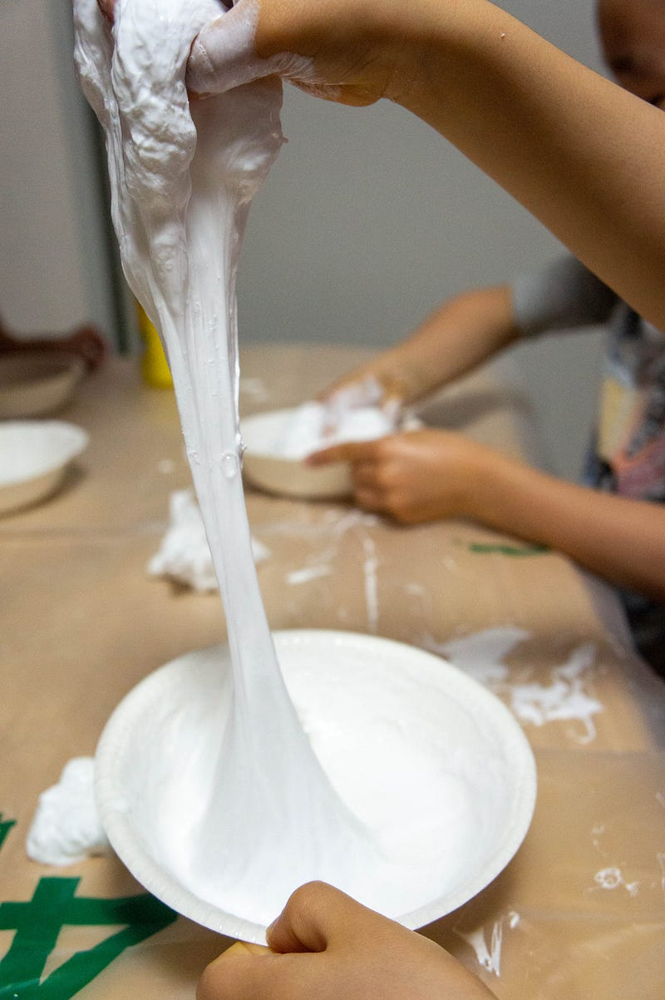
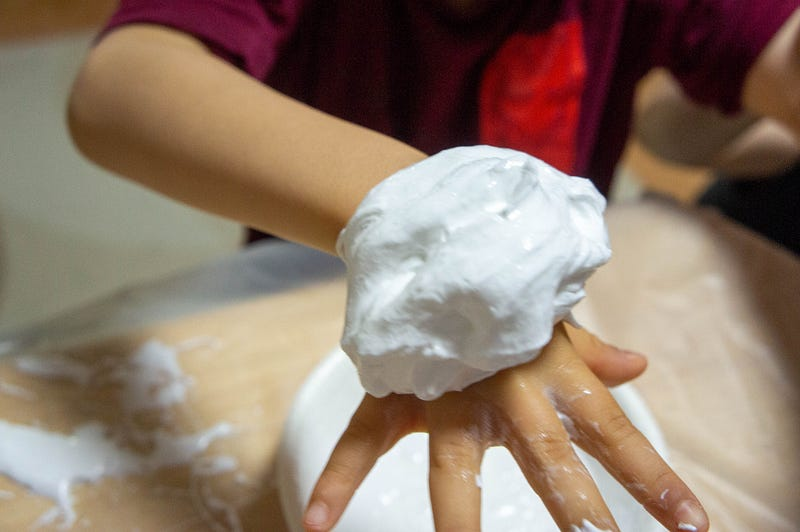
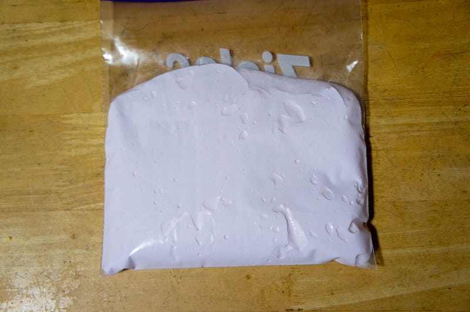

休校中の子供達のためにスライムを作って遊ぶ
休校中の子供達のためにスライムを作って遊ぶ
始まりはYouTubeでスライムに磁気のある物質を入れて遊ぶという動画を見てたことだった。
実は知識としてはスライムは簡単に作れるというのは知っていたのだが実際に自分でやってみたことなかったし、そもそも材料をちゃんと理解してなかった。だがこの動画ではなんかボンドとスターチ（洗濯のり）だけで作ってる… え？と思って調べ始めた。
その後調査していくとポリビニールアルコール（PVA）のノリと、ホウ素化合物であるところホウ砂が重要ということを理解した。上記の動画では明らかにスターチとボンドだけで作っているのでどこか（このあたり？）にホウ砂らしきものが入ってるんだろうなぁ。
というわけでしょうがない。日本で夢の材料二つだけからのスライム作成はもっと調査が必要になりそうなので、一旦あちこちのブログから情報をかき集めた。
こんにちは。一応理系の大学を出ているのに、数学も物理も化学も高校以来遠ざかっている長倉です。 化学を思い出すべく（？）先日、自宅でスライムを作りました。 子どものころに作った方もいらっしゃるでしょうか。…blog.miraikan.jst.go.jp
スライムのアレンジで一番手といってもいいほど有名なボンドスライムです。 そのボンドスライムですが、ホウ砂水や洗濯のりを使う場合が多いのですが、実は使わなくても作れちゃいます。…okapon-info.com
とりあえずどれもその辺で手に入るものでスライムは作れるとわかったので、以下の材料をオーダー
https://amzn.to/2PUagKQ （なぜかmediumがこのリンクだけ展開してくれない）
賢い皆様はお気づきかもしれませんが、ホウ砂を500g買うとか馬鹿ですからね。50gパックもあるので是非そちらを。私の知り合いの方は是非ホウ砂が欲しい時は私に声をかけてください。

スライムを大量に作るならボンドは数本単位で買っても大丈夫。洗濯ノリは一本で大丈夫そう。
化学なので当然分量は厳密にはかったほうがいいんでしょうが、今回もだいたい勘でやります。とくにホウ砂の量に関してはこれでかたさが決まるっぽいので自分好みに調整したかったのもあって、まず飽和ホウ砂水溶液を作って、それを水に垂らして希釈する形で濃度を加減するようにしてみました。

まず少量のボンド、洗濯のりを先にまぜておき、その後飽和ホウ砂水溶液を追加してテスト。一瞬でガチガチの物体ができてしまい、予想どおりスライムではない何かができた。
次、50ml程度の水に飽和ホウ砂水溶液をスプーン5杯ほど。これくらいならすぐガチガチになることはないみたい。50mlずつくらいのボンドと洗濯のりをまぜたところにスプーン一杯ずつ程度追加しては混ぜてを繰り返していく。
今度は良い感じなので子供達を呼んで早速グニグニさせていく。もちろんですけど、スライムを口に入れたりしないようしっかり注意してからね。

スライムのかたさ自体は本当にこのホウ砂水溶液の分量でほぼきまるみたい。練ってある程度固まったあとにまだ柔らかすぎるなー、と思ったら少量ずつホウ砂水溶液を追加してまた練れば固くなる。

というわけでこのまま色をつけたスライムを作ったり、文字をつくってみたりぐにゃぐにゃと1時間強スライムを子供達とこねくりまわした。
休校やら病気やらですっかり家にいるだけ生活になっていた子供達にすこしでも変わったアクティビティを用意してあげようと思ってたのでこのスライムはちょうどよかった。安いし簡単だしおすすめです。
なお、保存が利くのかどうかしらないけど、いったん今日作ったスライムはまとめてジップロックにいれて保存しておきました。
